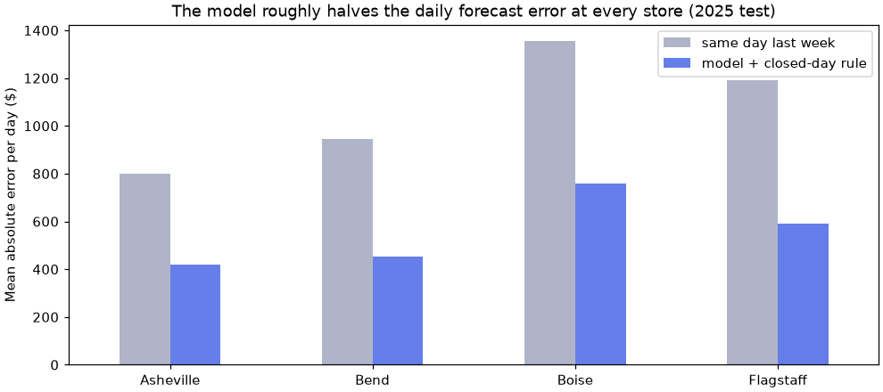

🏔️ Lesson 13.2: Capstone Project
Pick one real Pinecrest problem, carry it from a vague request to a model you can defend, and hand over the evidence: a notebook that reruns, a model card a manager can read, and an honest account of what the model should and should not be used for.
🎯 Learning Objectives
By the end of this capstone, you will be able to:
- Frame a business request as a machine-learning task with a decision, a target, a leakage-safe split, a metric and a baseline, written down before any modeling
- Build, compare and improve models in leakage-proof pipelines, touching the test set once
- Analyze errors by subgroup and explain the model honestly, without claiming causes
- Review your model against a responsible-ML checklist and document it in a model card
- Deliver a project that reruns from a fresh start and score it yourself against a rubric
In This Lesson
📨 The Brief
In Lesson 13.1 you followed a guided path through a churn project. This time nobody gives you the path. Real machine-learning work arrives as a request from someone who needs a decision made, a folder of data, and a deadline. Turning that into a model you can defend, without being told each step, is the skill that the previous forty-three lessons were building towards.
From: Pinecrest Outfitters, operations and marketing
Several teams have asked for "some machine learning" this year. We have listed their requests below. Please take one, build the best model you honestly can, and tell us whether we should use it, how, and what could go wrong. We will read the model card, not the code, but our data team will rerun your notebook before anything goes live.
💡 Mental Model: The Trail Guide's Report
A guide who scouts a new route does not hand the club a diary of every step. They hand over a short report: where the route goes, how long it takes compared with the old route, where it is dangerous, and who should not attempt it. Your capstone is the same. The notebook is the scouting trip. The model card is the report: what the model does, how much better it is than the old way (the baseline), where it fails, and what it must not be used for.
What You Will Hand In
| Deliverable | What it is | Who it is for |
|---|---|---|
capstone.ipynb (or a script) | Runs from a fresh kernel to the end and produces every number and figure in the model card | The data team that reruns it, and you in six months |
model_card.md | One to two pages: intended use, data, metrics against the baseline, subgroup results, limitations, monitoring plan | A manager with ten minutes |
| One to three figures (PNG) | Saved from code, each title stating its finding | The reader of the model card |
model.skops and requirements.txt | The fitted pipeline saved in the safer format from Lesson 12.1, with pinned versions | Whoever deploys or audits it |
results.json | The final metrics, baseline included, as data | Future you, comparing the next version |
Optional: serve.py | A FastAPI endpoint with a test, as in Lesson 12.2 | A developer who wants to try it |
The arrows that loop back are normal. Finding a leak during error analysis, or a better feature while improving, is what a real project looks like. The one loop that is not allowed is going back from the test set to tuning: once you have looked at the test score, the model is finished.
🤔 Why This Matters
Anyone can call fit. What employers and clients look for is judgment: which split you chose and why, the baseline you measured first, the feature you removed because it would not exist at prediction time, the claim you refused to make. A finished, self-directed project shows that judgment in a way no quiz can.
🧭 Choose Your Problem
Each of the five requests below can be solved with the course data, and each leans on different modules. They are roughly similar in size. Read all five, then choose the one you are most curious about: curiosity carries you through the dull parts better than ease does. Churn prediction (Lesson 13.1) and daily store forecasting (the worked example below) are taken.
A. Demand forecasting: "How many units will each store sell next season?"
Decision: how much stock of each product to send to each store. Data: weekly_demand.csv (24 products × 4 stores × 104 weeks). Task: regression. Split: train on 2024, test on 2025. Metric: MAE in units (also think about whether over- and under-forecasting cost the same). Leans on: Modules 2, 3 and 5.
Think about: which columns would you really know when the order is placed? (Is this week's actual temperature one of them?) A few zeros are stockouts, not zero demand: sales are not demand. Deep discounts happen only in the off-season, so a naive look at price and units will mislead you about how customers respond to price. Seasons differ by category.
B. Fraud review queue: "Which payments should we hold for a human to check?"
Decision: which online payments a two-person review team checks each day (they can look at about 1% of payments). Data: transactions.csv (50,000 payments, 0.9% fraud). Task: imbalanced classification. Split: train January to May, test June. Metric: average precision, plus precision and recall at the team's capacity. Leans on: Modules 1, 2, 5 and 8.
Think about: accuracy is meaningless here. A held payment is a real customer kept waiting: who gets held most often? The fraud rate drifts from month to month. Some frauds look exactly like normal purchases, so no model catches them all: what recall is realistic?
C. Review triage: "Send unhappy reviews to the product team automatically"
Decision: which incoming reviews a product manager reads first. Data: reviews.csv (4,000 reviews). Task: text classification, positive (4 to 5 stars) against negative (1 to 2). Split: stratified 75/25. Metric: accuracy and the recall of negative reviews (a missed complaint is the costly error). Leans on: Modules 4 and 11.
Think about: what will the live system do with a 3-star review, which you dropped from training? Negation ("not waterproof at all") and typos. Some star ratings contradict their own text: read your model's worst errors before blaming the model.
D. Recommendations: "What ten products should each customer see on the home page?"
Decision: the personalized product row on the website. Data: interactions.csv (3,000 customers, 200 products) and products_ml.csv. Task: ranking. Split: leave-last-out (each customer's most recent purchase is the test item). Metric: hit rate at 10. Leans on: Modules 9 and 11.
Think about: never recommend what the customer already owns. What do you show a brand-new customer, or a product nobody has bought yet? Does your model only push the best sellers? Purchase histories are personal data: who may see them?
E. Customer segments: "What kinds of customers do we have, and how should we talk to each?"
Decision: which marketing message each group of customers receives. Data: customers_churn.csv (behavior columns only). Task: clustering, no target. Validation: silhouette, stability across seeds and subsamples, and profiles that a marketer recognizes. Leans on: Modules 8 and 9.
Think about: scaling and skewed columns; choosing k from several signals, not one; whether the segments survive a different seed or half the data; giving each segment a name from its profile. Keep demographic columns such as age_group out of the clustering, and check afterwards whether the segments differ in churn (without ever having trained on it).
⚠️ "Do Not Deploy" Can Be a Full Answer
A careful project that concludes "the model beats the baseline by too little to be worth the risk", or "this only works for three of four stores", scores as well on the rubric as a dramatic success. The brief asks whether Pinecrest should use a model. Sometimes the honest answer is no, or not yet.
You may propose your own problem on the Pinecrest data instead. It must pass three checks: it names a decision someone could make with the predictions, the data to train and test it exists in data/ without inventing labels, and it is not one of the course's existing projects.
🧰 The Starter Template
The most expensive capstone mistake is an evaluation setup that is quietly wrong: a random split on time-ordered data, a baseline that is too weak, a test item the customer already owned. So you start from a template that gets those parts right. Each function loads one problem's data, makes the split the brief asks for and measures the honest baseline. Everything after that is yours.
import numpy as np
import pandas as pd
from sklearn.dummy import DummyClassifier
from sklearn.metrics import accuracy_score, average_precision_score, mean_absolute_error, silhouette_score
from sklearn.model_selection import train_test_split
from sklearn.preprocessing import StandardScaler
def start_demand():
"""Weekly units per product and store. Train 2024, test 2025. Metric: MAE in units."""
df = pd.read_csv("data/weekly_demand.csv", parse_dates=["week_start"])
train, test = df[df["year"] == 2024], df[df["year"] == 2025]
per_product = train.groupby("product_id")["units_sold"].mean()
baseline = mean_absolute_error(test["units_sold"], test["product_id"].map(per_product))
return {"train": train, "test": test, "target": "units_sold",
"metric": "MAE (units)", "baseline": ("per-product mean", baseline)}
def start_fraud():
"""Card payments. Train January to May, test June. Metric: average precision."""
df = pd.read_csv("data/transactions.csv", parse_dates=["timestamp"])
is_test = df["timestamp"] >= "2025-06-01"
train, test = df[~is_test], df[is_test]
dummy = DummyClassifier(strategy="prior").fit(train[["amount"]], train["is_fraud"])
baseline = average_precision_score(test["is_fraud"], dummy.predict_proba(test[["amount"]])[:, 1])
return {"train": train, "test": test, "target": "is_fraud",
"metric": "average precision", "baseline": ("no model", baseline)}
def start_reviews():
"""Review text, positive (4-5 stars) vs negative (1-2). Metric: accuracy and recall of negatives."""
df = pd.read_csv("data/reviews.csv")
df = df[df["rating"] != 3].assign(positive=lambda d: (d["rating"] >= 4).astype(int))
train, test = train_test_split(df, test_size=0.25, stratify=df["positive"], random_state=42)
baseline = accuracy_score(test["positive"], np.ones(len(test), dtype=int))
return {"train": train, "test": test, "target": "positive",
"metric": "accuracy", "baseline": ("always positive", baseline)}
def start_recs():
"""Customer x product purchases. Leave-last-out test. Metric: hit rate at 10."""
df = pd.read_csv("data/interactions.csv", parse_dates=["last_purchase_date"])
df = df.sort_values(["customer_id", "last_purchase_date", "product_id"])
test = df.groupby("customer_id").tail(1) # each customer's latest purchase
train = df.drop(test.index)
popular = train.groupby("product_id")["customer_id"].count().sort_values(ascending=False)
owned = train.groupby("customer_id")["product_id"].apply(set)
hits = 0
for customer, item in zip(test["customer_id"], test["product_id"]):
top10 = [p for p in popular.index if p not in owned[customer]][:10]
hits += item in top10
return {"train": train, "test": test, "target": "product_id",
"metric": "hit rate at 10", "baseline": ("most popular unowned", hits / len(test))}
def start_segments():
"""Customer behavior, no target. Metric: silhouette, plus stability and profiles."""
df = pd.read_csv("data/customers_churn.csv")
cols = ["orders_12m", "avg_order_value", "discount_share", "return_rate"]
X = StandardScaler().fit_transform(df[cols])
baseline = silhouette_score(X, df["loyalty_tier"], sample_size=3000, random_state=42)
return {"train": df, "test": None, "target": None, "features": cols,
"metric": "silhouette", "baseline": ("existing loyalty tiers", baseline)}Run every starter once to see the five baselines side by side. In your own notebook you only call the one you chose, for example problem = start_fraud().
starters = {"demand": start_demand, "fraud": start_fraud, "reviews": start_reviews,
"recs": start_recs, "segments": start_segments}
for name, start in starters.items():
problem = start()
label, value = problem["baseline"]
n_test = 0 if problem["test"] is None else len(problem["test"])
print(f"{name:9s} train {len(problem['train']):6,} test {n_test:5,} {problem['metric']:17s} {label:22s} {value:.3f}")Output
demand train 5,088 test 4,896 MAE (units) per-product mean 13.419
fraud train 41,738 test 8,262 average precision no model 0.008
reviews train 2,321 test 774 accuracy always positive 0.745
recs train 29,178 test 3,000 hit rate at 10 most popular unowned 0.209
segments train 6,000 test 0 silhouette existing loyalty tiers 0.079Read each baseline as the bar your model must clear by a margin that matters:
- Demand: predicting each product's 2024 weekly average misses by about 13 units a week. A good model should cut that substantially.
- Fraud: with no model, average precision equals the fraud rate, under 1%. That is the floor for a ranking metric on rare events.
- Reviews: "every review is positive" is right about three times in four, and catches no complaints at all.
- Recommendations: the ten best sellers a customer does not already own contain their next purchase about 21% of the time. Beating popularity is harder than it sounds.
- Segments: the loyalty tiers Pinecrest already uses barely separate customers by behavior (silhouette near 0.08). Your segments should describe behavior far better, and be stable.
✅ What the Template Does Not Do
It does not choose features, build pipelines, tune or explain anything. It also does not check the data: Milestone 2 does that. Treat the template as the agreed rules of the competition, and change a split or metric only if you can say in your model card why the new one fits the decision better.
🔬 A Worked Example, in Outline
Here is a complete small project on a problem that is not on your list, at about a fifth of the size of yours. Read it for its shape: plan, check, baselines, one honest model, error analysis, a fix, a short note. The question comes from the store managers: "Can you forecast tomorrow's sales for each store, so we can schedule staff?"
1. The Plan, Written Before Any Code
- Decision: how many staff each store schedules for tomorrow.
- Target and task: tomorrow's
salesper store, regression. - Available at prediction time: all sales up to today, the calendar, and tomorrow's planned promotion or event (both are set weeks ahead). Not available: tomorrow's transactions.
- Split: train 2023 to 2024, test 2025, by date.
- Metric: MAE in dollars, because a dollar of error costs about the same in either direction for staffing.
- Baselines: "same as yesterday" and "same as the same day last week".
- What would make me say no: a model that does not beat the weekly baseline by at least 20%.
2. Load and Check
sales = pd.read_csv("data/daily_store_sales.csv", parse_dates=["date"])
print(sales.shape, sales["date"].min().date(), "to", sales["date"].max().date())
print(sales["store"].value_counts().to_dict())
print(sales["event"].value_counts().to_dict())
print("largest sale on a closed day:", sales.loc[sales["event"] == "Closed", "sales"].max())Output
(4384, 6) 2023-01-01 to 2025-12-31
{'Asheville': 1096, 'Bend': 1096, 'Boise': 1096, 'Flagstaff': 1096}
{'Holiday rush': 72, 'Memorial Day sale': 48, 'Labor Day sale': 48, 'Black Friday': 48, 'Closed': 24}
largest sale on a closed day: 0.0Three years, four stores, one row per store and day, no gaps. Closed days have zero sales, and there are only 24 of them: remember that number.
3. Features That Exist at Prediction Time, and a Split by Date
Every lag is shifted so that a row only sees earlier days. The 7-day average uses shift(1) before rolling(7), so the day being predicted never sneaks into its own features. The transactions column stays out completely: tomorrow's number of transactions is not known today (Common Mistake 1 shows what it would do).
sales = sales.sort_values(["store", "date"]).reset_index(drop=True)
per_store = sales.groupby("store")["sales"]
sales["lag_1"] = per_store.shift(1) # yesterday
sales["lag_7"] = per_store.shift(7) # same weekday last week
sales["lag_14"] = per_store.shift(14)
sales["mean_7"] = per_store.transform(lambda s: s.shift(1).rolling(7).mean()) # the 7 days before today
sales["dow"] = sales["date"].dt.dayofweek
sales["month"] = sales["date"].dt.month
sales["event"] = sales["event"].fillna("none").astype("category")
sales["store"] = sales["store"].astype("category")
day_features = ["store", "dow", "month", "promo", "event", "lag_1", "lag_7", "lag_14", "mean_7"]
table = sales.dropna(subset=["lag_14", "mean_7"])
day_train = table[table["date"] < "2025-01-01"]
day_test = table[table["date"] >= "2025-01-01"]
print(len(day_train), len(day_test), day_train["date"].max().date(), day_test["date"].min().date())Output
2868 1460 2024-12-31 2025-01-014. Baselines First
mae = {
"naive (yesterday)": mean_absolute_error(day_test["sales"], day_test["lag_1"]),
"seasonal naive (last week)": mean_absolute_error(day_test["sales"], day_test["lag_7"]),
}
for name, value in mae.items():
print(f"{name:28s} MAE ${value:,.0f}")Output
naive (yesterday) MAE $1,350
seasonal naive (last week) MAE $1,072"Same as last week" beats "same as yesterday" because of the strong weekly cycle (Saturdays are the busiest days). It is the bar to clear: off by about $1,070 per store per day.
5. One Honest Model
Gradient boosting with native categorical support (Lesson 5.3), default settings, fitted once. No tuning has happened, so the test set has not been used to make any choice.
from sklearn.ensemble import HistGradientBoostingRegressor
day_model = HistGradientBoostingRegressor(categorical_features="from_dtype", random_state=42)
day_model.fit(day_train[day_features], day_train["sales"])
day_pred = day_model.predict(day_test[day_features])
mae["gradient boosting"] = mean_absolute_error(day_test["sales"], day_pred)
print(f"gradient boosting MAE ${mae['gradient boosting']:,.0f}")
print(f"improvement over last week: {1 - mae['gradient boosting'] / mae['seasonal naive (last week)']:.0%}")Output
gradient boosting MAE $561
improvement over last week: 48%6. Error Analysis: Where Is It Wrong?
An average hides where the errors live. Break them down by something the reader cares about: here, the kind of day.
errors = day_test[["date", "store", "event", "sales", "lag_7"]].assign(pred=day_pred)
errors["abs_err"] = (errors["sales"] - errors["pred"]).abs()
print(errors.groupby("event", observed=True)["abs_err"].agg(["count", "mean"]).round(0))
print("forecasts for closed days:", errors.loc[errors["event"] == "Closed", "pred"].round(0).tolist())Output
count mean
event
Black Friday 16 1377.0
Closed 8 993.0
Holiday rush 24 687.0
Labor Day sale 16 1296.0
Memorial Day sale 16 1301.0
none 1380 530.0
forecasts for closed days: [19.0, -101.0, 846.0, 116.0, 2455.0, 2070.0, 825.0, 1508.0]Two findings. Event days are hard (few examples, big swings): their errors are two to three times the ordinary days', which is worth a caveat. And the model forecasts sales on days when the store is closed, up to $2,455, and once even a negative amount: it saw only 16 closed rows in training, too few to learn that "Closed" means zero. Nobody needs a model for that. A business rule does it perfectly:
day_pred_rule = np.where(day_test["event"] == "Closed", 0.0, day_pred)
mae["boosting + closed-day rule"] = mean_absolute_error(day_test["sales"], day_pred_rule)
for name, value in mae.items():
print(f"{name:28s} MAE ${value:,.0f}")Output
naive (yesterday) MAE $1,350
seasonal naive (last week) MAE $1,072
gradient boosting MAE $561
boosting + closed-day rule MAE $556Overall the rule changes the MAE only a little, because closed days are rare. It still matters: a forecast that schedules staff for a closed store is the kind of error that makes people stop trusting a model.
Last, check that the improvement holds for every store, not just on average. This is the figure for the model card.
import matplotlib.pyplot as plt
errors["err_naive"] = (errors["sales"] - errors["lag_7"]).abs()
errors["err_model"] = (errors["sales"] - day_pred_rule).abs()
store_mae = errors.groupby("store", observed=True)[["err_naive", "err_model"]].mean()
print(store_mae.round(0))
fig, ax = plt.subplots(figsize=(9, 4), layout="constrained")
store_mae.rename(columns={"err_naive": "same day last week", "err_model": "model + closed-day rule"}).plot.bar(
ax=ax, rot=0, color=["#b0b4c8", "#667eea"])
ax.set_ylabel("Mean absolute error per day ($)")
ax.set_xlabel("")
ax.set_title("The model roughly halves the daily forecast error at every store (2025 test)")
plt.show()Output
err_naive err_model
store
Asheville 798.0 421.0
Bend 946.0 451.0
Boise 1356.0 760.0
Flagstaff 1189.0 592.0
7. The Note
The worked example ends with a short summary in the model-card shape (the full template is in the next section). Every number comes from the output above.
Next-day store sales forecast (staff scheduling)
Recommendation: use for scheduling, with the closed-day rule, and review monthly.
Performance (2025, held out): MAE $556 per store-day, against $1,072 for
"same day last week" (48% lower; 95% CI of the saving $460 to $569).
Better at all four stores.
Limitations: event days (Black Friday, holiday sales) have errors about 2.5x
the average; schedule extra staff on them by judgment. Trained on three
years of four stores: a new store has no history and cannot be forecast.
Not for: financial targets or judging store managers (errors of $500 a
day are normal and not a manager's fault).
Monitoring: weekly MAE against the seasonal baseline; retrain if the
model's advantage falls below 20% for four weeks.That is the whole project: under a hundred lines of code, one figure and a short note. Notice what it did not do: no tuning grid, no ten models, no deep learning, and no claim that promotions cause sales. Your capstone has the same shape with more room in each step.
📄 The Model Card
A model card is a short document that travels with a model and says what it is for, how well it works, for whom, and where it should not be trusted. The idea comes from the research paper "Model Cards for Model Reporting" (Mitchell and colleagues, 2019), and many model hubs now expect one. Yours is a Markdown file of one to two pages. Use this skeleton:
# Model card: <model name>, version <n>
## Recommendation
One or two sentences: use it, use it with conditions, or do not use it yet.
## Intended use
The decision it supports, who uses it, how often. Who acts on a prediction.
## Out-of-scope uses
Decisions it must NOT be used for, and why.
## Data
Files, rows, period, what one row is. Split and why. Features used, and any
feature removed because it would not exist at prediction time.
## Performance
Test metric with a 95% interval, next to the baseline on the same test set.
The metric's business meaning (for example: "of 80 payments held a day, 35 are fraud").
## Performance by subgroup
The same metric by store, category, account age or customer segment. Gaps and what they mean.
## How it works and what drives it
Model type in one line. Top drivers from permutation importance or SHAP,
described as what the MODEL relies on, not as causes.
## Risks, fairness and privacy
Who bears the errors. Sensitive attributes: used or not, and why.
What data the model or its outputs reveal.
## Limitations
Specific to this data. ("More data is needed" is not a limitation.)
## Monitoring and maintenance
What to watch, how often, the threshold for retraining, and the fallback (the baseline).
## Reproduce
Commands, versions, seed, and where model.skops and results.json live.| Weak | Strong |
|---|---|
| The model is 99.1% accurate. | Holding the 1% of payments the model scores highest would catch about half of June's fraud; doing nothing catches none, and checking 1% at random catches about 1% of it. |
| Discount share causes churn. | The model relies most on recency and discount share. This describes the model, not why customers leave. |
| The model works well. | MAE 8.2 units against 13.4 for the per-product average (2025 test), but snow gear in summer is forecast poorly. |
| Limitations: more data is needed. | Only two years of history: one Black Friday per year in training, so holiday weeks are uncertain. |
🧭 Responsible-ML Checklist
Run through this list in Milestone 7 and answer each item in your model card or notebook. "Not applicable, because..." is a fine answer; skipping the item is not.
⚠️ Before Anyone Uses This Model
- Leakage audit. For every feature, write down when its value becomes known. Anything known only after the prediction moment is removed, however much it helps the score.
- One look at the test set. All choices (features, model, hyperparameters, threshold) were made with cross-validation or a validation split. The test score was computed once, at the end.
- Baseline on the same test set. The model card shows both numbers side by side, with an interval for the model's.
- Subgroup performance. The metric is reported by at least one meaningful group (store, category, account age, segment). Large gaps are explained or flagged.
- Who bears the errors. You named the cost of a false positive and a false negative, and who pays each one (a customer held at checkout, a store short of stock, a complaint that nobody reads).
- Sensitive attributes. No protected or sensitive attribute is a target. Any demographic column used as a feature is justified in writing, or removed; check results by that group either way.
- Humans in the loop. The model recommends and a person decides wherever an error harms someone (held payments are reviewed, not declined automatically).
- Explanations are not causes. Importance and SHAP values describe the model. Words like "causes" and "drives" appear only where a design supports them, which in this course is nowhere.
- Privacy. No customer-level predictions, IDs or purchase histories leave the notebook. Published figures show aggregates only.
- Monitoring and fallback. The model card names what to watch (input drift, the metric against the baseline), how often, and what happens if the model is switched off.
📏 The Rubric
Judge your own work with this before anyone else does. "Proficient" in every row is a successful capstone and the standard expected of a junior machine-learning engineer. A row at "Developing" is not a verdict: it tells you where the next hour should go.
| Criterion | 1 · Beginning | 2 · Developing | 3 · Proficient | 4 · Exemplary |
|---|---|---|---|---|
| Framing | "Predict X" with no decision or user. | Target and metric chosen, but the decision, the costs of errors or the prediction moment are vague. | Decision, user, target, prediction moment, split, metric and baseline written down before modeling, and followed. | Also states in advance what result would mean "do not deploy", and translates the metric into the business's units. |
| Data and leakage | Columns used as they come. No checks. | Shapes and missing values checked, but some feature's timing is never questioned. | Every feature's availability at prediction time is checked; transformations are fitted inside pipelines; the split matches the data's structure (time, groups). | Also demonstrates a leak caught (score before and after) and documents data quirks such as stockout zeros or mislabeled stars. |
| Evaluation | One score on training data, or accuracy on rare events. | Test score against a baseline, but the test set was used for choices, or the metric does not fit the decision. | Model selection with cross-validation on the training data, test used once, metric fits the decision, baseline beside it. | Also an interval (bootstrap) for the test metric and an operating point (threshold, top-k) chosen from costs or capacity. |
| Modeling | One model, default settings, no comparison. | Several models tried in a loop, without a reason for the order or the final pick. | A simple model first, then a stronger one; feature work and modest tuning that each earn their place in CV. | Also shows which changes did not help and stops when gains are smaller than the noise. |
| Error analysis and explanation | None. | A feature importance chart, unexplained. | Errors broken down by a meaningful subgroup; worst cases read; drivers explained as properties of the model. | Also turns an error finding into a fix (a feature, a rule, a caveat) and measures its effect. |
| Responsible ML | Not considered. | A generic paragraph about fairness. | Every checklist item answered for this problem: who bears errors, subgroup results, sensitive attributes, privacy, human review, monitoring. | Also changes the system because of a finding (a threshold, a review step, a removed feature) and says why. |
| Communication | The notebook is the report. | A model card exists, but numbers lack baselines, or caveats are generic. | One to two pages that lead with a recommendation, with quantified, baseline-relative evidence, specific limitations and finding-first figures. | Also readable by a non-specialist, who could act on it correctly. |
| Reproducibility | Fails or gives different numbers when rerun. | Runs, but needs cells in a special order, absolute paths or unseeded randomness. | Restart and Run All works from the project folder; seeds set; model saved with skops; versions pinned; card numbers match the output. | Also a README, functions with clear names, and results logged (MLflow or results.json) for each experiment. |
⚠️ Common Mistakes
These are the ways capstone projects most often go wrong. Only one of them raises an error; the others produce numbers that look fine.
1. A Feature That Contains the Answer
The sales table has a transactions column, and it is right there, so why not use it? Add it to the worked example's model:
leaky_features = day_features + ["transactions"]
leaky_model = HistGradientBoostingRegressor(categorical_features="from_dtype", random_state=42)
leaky_model.fit(day_train[leaky_features], day_train["sales"])
leaky_mae = mean_absolute_error(day_test["sales"], leaky_model.predict(day_test[leaky_features]))
print(f"MAE with the same day's transactions: ${leaky_mae:,.0f} (honest model: ${mae['gradient boosting']:,.0f})")Output (no error, and that is the problem)
MAE with the same day's transactions: $231 (honest model: $561)What happened: the error fell sharply, and every bit of the improvement is fake: when the schedule is made, tomorrow's transactions have not happened yet. Sales are roughly transactions times basket size, so the model is reading the answer. Fix: for every feature, ask "at the moment of prediction, would I know this?" A result that suddenly gets much better is a reason to look for a leak, not to celebrate (Lesson 1.2's cancellation_reason in a new costume).
2. Accuracy on a Rare Event
june = start_fraud()["test"]
print(f"June fraud rate: {june['is_fraud'].mean():.2%}")
print(f"accuracy of 'nothing is fraud': {(june['is_fraud'] == 0).mean():.3f}")Output
June fraud rate: 0.77%
accuracy of 'nothing is fraud': 0.992What it means: a model that never flags anything is 99% accurate and catches no fraud. Fix: choose the metric from the decision: average precision for ranking rare events, plus precision and recall at the number of cases the team can actually review (Lessons 1.4 and 2.5).
3. Encoding Outside the Pipeline
Encode with pd.get_dummies before training, and the model works in the notebook, then fails on the first real request:
from sklearn.linear_model import LinearRegression
weeks_2024 = pd.read_csv("data/weekly_demand.csv").query("year == 2024")
X_dummies = pd.get_dummies(weeks_2024[["store", "price", "promo"]], dtype=float)
quick = LinearRegression().fit(X_dummies, weeks_2024["units_sold"])
new_week = pd.DataFrame({"store": ["Bend"], "price": [89.95], "promo": [1]})
quick.predict(pd.get_dummies(new_week, dtype=float))Error
ValueError: The feature names should match those that were passed during fit.
Feature names seen at fit time, yet now missing:
- store_Asheville
- store_Boise
- store_FlagstaffWhat it means: one new row only has one store, so get_dummies made one store column instead of four. Fix: put the encoder inside the pipeline (Lesson 2.2). It remembers the training categories, and handle_unknown="ignore" copes with a store it has never seen:
from sklearn.compose import make_column_transformer
from sklearn.pipeline import make_pipeline
from sklearn.preprocessing import OneHotEncoder
encode = make_column_transformer((OneHotEncoder(handle_unknown="ignore"), ["store"]), remainder="passthrough")
safe = make_pipeline(encode, LinearRegression()).fit(weeks_2024[["store", "price", "promo"]], weeks_2024["units_sold"])
print(safe.predict(new_week).round(1))Output
[35.9]4. Tuning Until the Test Score Looks Good
You train, check the test score, change a feature, check again, try another model, check again. After twenty rounds the test score is excellent, and it no longer measures anything: you have fitted it by hand. Fix: make every choice with cross-validation on the training data (with TimeSeriesSplit for time-ordered problems, Lesson 1.3), and write the test score down only once. If you peeked, say so in the model card; it is far better than pretending.
5. A Model Card That Oversells
"The model identifies the causes of fraud" or "the model is 99% accurate" are the two sentences reviewers dislike most. Fix: lead with a recommendation, give every number next to its baseline, describe drivers as what the model uses, and list limitations specific enough that someone could test them.
🛠️ Project: Your Pinecrest ML Project
Nine milestones, about six and a half hours of work after reading this page. Spread them over three or four sittings; a night's sleep between modeling and writing improves both. The times are honest estimates for a first independent project. Going over on one milestone is normal; going over on all of them means the scope has grown, so narrow it.
🛠️ Milestone 1: Choose and plan (30 min)
Pick your problem. Create the project folder (your pinecrest-ml/ folder from Lesson 0.1 works) and a notebook called capstone.ipynb. In its first Markdown cell, write the plan in the shape of the worked example: decision, user, target, prediction moment, features you expect to be available, split, metric and its business meaning, baseline, and what result would make you say "do not deploy".
Done when: someone else could read your plan and predict roughly what your notebook will contain.
🛠️ Milestone 2: Load, check and split (40 min)
Paste in your starter function and call it. Then check the data: shapes, dtypes, date ranges, missing values by group, duplicate keys, the distribution of the target, odd values (zeros, outliers, contradictory labels). Read the relevant part of data/README.md. Write one line under each check saying what you concluded. Fill in a table of every feature with "known at prediction time? yes or no".
Done when: you can say what one row is, how many rows train and test hold, and which columns you will never use.
🛠️ Milestone 3: Baseline and evaluation harness (30 min)
Write one function, evaluate(model) or similar, that scores a candidate with cross-validation on the training set (time-aware where the data is time-ordered) and returns the metric you chose. Run it on the baseline. For recommendations, write the hit-rate function on a validation split carved from the training data; for segments, the stability check (Adjusted Rand Index between runs with different seeds or halves of the data).
Done when: one call gives you a cross-validated score for any candidate, and the baseline's score is printed.
🛠️ Milestone 4: A first pipeline (45 min)
Build the simplest sensible model as a Pipeline: preprocessing plus a linear model (logistic or ridge regression, TF-IDF with logistic regression, item-kNN, or K-Means on scaled features). Score it with your harness. It should beat the baseline; if it does not, look for a bug before looking for a better model.
Done when: a pipeline with no hand-fitted steps beats the baseline in cross-validation.
🛠️ Milestone 5: Improve (90 min)
Try, in this order, and keep a log (a small DataFrame, results.json or MLflow) of each attempt and its CV score: better features (Lesson 2.3), a stronger model (gradient boosting, SVD, bigrams, a different k or algorithm), then modest tuning (Lesson 6.2: random or halving search, a few dozen candidates). Keep a change only if it beats the previous best by more than the spread across folds. Deep learning is allowed, but only if you can show it beats a tuned gradient-boosting or linear model.
Done when: you have a final candidate, a log of what you tried, and you can say which change helped most.
🛠️ Milestone 6: Test once, then analyze the errors (45 min)
Refit the final pipeline on all training data and score it on the test set, once. Compute a bootstrap interval (Exercise 1). Choose the operating point if your problem has one (a threshold for the review team's capacity, top 10 for recommendations). Then break the errors down by at least one subgroup and read the twenty worst cases.
Done when: you have the test metric with an interval, next to the baseline, and one written finding about where the model fails.
🛠️ Milestone 7: Explain and review (40 min)
Compute permutation importance or SHAP values on the test set (Module 7) and write two sentences about what the model relies on. Then answer every item of the responsible-ML checklist for your problem. If an answer changes the system (a review step, a removed feature, a different threshold), make the change and note its effect on the metric.
Done when: every checklist item has a written answer specific to your problem.
🛠️ Milestone 8: Figures and model card (45 min)
Choose one to three figures that carry the argument (model against baseline, performance by subgroup, a threshold or segment profile chart) and redraw them with finding-first titles. Write model_card.md from the skeleton: the recommendation first, then the rest. Copy numbers from the output, never from memory.
Done when: a friend outside the field reads the card and tells you correctly what the model is for and when not to trust it.
🛠️ Milestone 9: Reproduce, save and review (30 min)
Save the fitted pipeline with skops.io.dump, write results.json and requirements.txt (Lesson 12.1). Restart the kernel and run everything. Check each number in the model card against the fresh output. Score yourself on the rubric and fix the lowest row first.
Done when: the completion checklist below is all ticked.
🛠️ Optional: Serve it (60 min)
Wrap the saved pipeline in a FastAPI app with one /predict endpoint and a TestClient test, and add the drift check from Lesson 12.2 that compares new inputs with the training data. Keep the model card as the main deliverable.
✅ Project Completion Checklist
- A written plan opens the notebook, and the work follows it (or says where and why it changed)
- Every feature passed the "known at prediction time" check, and all preprocessing is inside a pipeline
- Choices were made with cross-validation; the test set was scored once, next to the baseline, with an interval
- Errors are broken down by at least one subgroup, and every responsible-ML checklist item is answered
model_card.mdleads with a recommendation and its numbers match the notebook's output- Restart and Run All succeeds;
model.skops,results.jsonandrequirements.txtexist - You scored yourself on all eight rubric rows
🏋️ Hands-on Exercises
Three warm-ups for habits the rubric rewards. They continue from the worked example and the starter template on this page, so errors, mae and start_fraud already exist.
🏋️ Exercise 1: An Interval for the Improvement
The worked example's model beat the seasonal baseline on 2025. How sure is that? Bootstrap it: resample the 1,460 test rows with replacement 1,000 times (rng = np.random.default_rng(42)), compute the baseline's MAE minus the model's MAE each time, and report the 2.5th and 97.5th percentiles.
💡 Hint
Use the same resampled row indices for both error columns, errors["err_naive"] and errors["err_model"], so each resample compares the two methods on the same days.
✅ Solution
rng = np.random.default_rng(42)
err_naive = errors["err_naive"].to_numpy()
err_model = errors["err_model"].to_numpy()
diffs = []
for _ in range(1000):
rows = rng.integers(0, len(err_naive), len(err_naive))
diffs.append(err_naive[rows].mean() - err_model[rows].mean())
low, high = np.percentile(diffs, [2.5, 97.5])
print(f"MAE saved per store-day: ${err_naive.mean() - err_model.mean():,.0f} (95% CI ${low:,.0f} to ${high:,.0f})")Output
MAE saved per store-day: $516 (95% CI $460 to $569)The interval is far from zero, so the improvement is not luck. One honest caveat for the model card: neighboring days are correlated, so treating every store-day as independent makes this interval somewhat too narrow. Resampling whole weeks (a block bootstrap) would widen it a little.
🏋️ Exercise 2: Who Gets Held?
Using start_fraud(), train a HistGradientBoostingClassifier (defaults, random_state=42) on the numeric columns plus category. Score June, print the average precision, and hold the top 1% of June payments (the review team's capacity). How many held payments are fraud? Then compare: what share of legitimate June payments come from new accounts (under 30 days old), and what share of the false alarms do?
💡 Hint
Give train and test the same category list with pd.CategoricalDtype(...), so a category's code means the same thing in both. The threshold for the top 1% is np.quantile(scores, 0.99).
✅ Solution
from sklearn.ensemble import HistGradientBoostingClassifier
fraud = start_fraud()
cols = ["account_age_days", "amount", "hour", "items", "category", "device_new",
"billing_shipping_mismatch", "country_mismatch", "card_attempts", "velocity_24h"]
cat_type = pd.CategoricalDtype(sorted(fraud["train"]["category"].unique()))
f_train = fraud["train"][cols].astype({"category": cat_type})
f_test = fraud["test"][cols].astype({"category": cat_type})
clf = HistGradientBoostingClassifier(categorical_features="from_dtype", random_state=42)
clf.fit(f_train, fraud["train"]["is_fraud"])
scores = clf.predict_proba(f_test)[:, 1]
y_june = fraud["test"]["is_fraud"].to_numpy()
print(f"average precision: {average_precision_score(y_june, scores):.3f} (no model: {fraud['baseline'][1]:.3f})")
held = scores >= np.quantile(scores, 0.99)
print(f"held {held.sum()} payments: {y_june[held].sum()} fraud of {y_june.sum()} in June")
new_account = (fraud["test"]["account_age_days"] < 30).to_numpy()
false_alarm = held & (y_june == 0)
print(f"new accounts: {new_account[y_june == 0].mean():.1%} of legitimate payments, "
f"{new_account[false_alarm].mean():.1%} of false alarms")Output
average precision: 0.477 (no model: 0.008)
held 83 payments: 32 fraud of 64 in June
new accounts: 8.4% of legitimate payments, 25.5% of false alarmsHolding 1% of payments (83 of them) catches half of June's fraud, 32 of 64, where a random 1% would catch about one. About two in five held payments are fraud. (Default boosting is not automatically the best model here: on June a plain logistic regression pipeline scores a higher average precision, so compare before you choose.) But the false alarms are not spread evenly: brand-new accounts are held far more often than their share of legitimate payments. That is not necessarily wrong (new accounts really are riskier), but it belongs in the model card, and it is a reason for a human review step and a fast release path, so a new customer's first order is not simply declined.
🏋️ Exercise 3: A Model Card Writer (Stretch)
Write a function write_model_card(card, path) that takes a dictionary with the keys name, recommendation, performance, limitations and monitoring, writes a Markdown file with one heading per section, and returns the path. Fill the performance section from the worked example's mae dictionary, so the numbers can never be copied wrong.
💡 Hint
Build a list of lines and join them with "\n"; pathlib.Path(path).write_text(...) writes the file. Format the numbers inside the function, not by hand.
✅ Solution
from pathlib import Path
def write_model_card(card, path="model_card.md"):
lines = [f"# Model card: {card['name']}", ""]
for key in ["recommendation", "performance", "limitations", "monitoring"]:
lines += [f"## {key.capitalize()}", card[key], ""]
Path(path).write_text("\n".join(lines))
return path
best, base = mae["boosting + closed-day rule"], mae["seasonal naive (last week)"]
card = {
"name": "Next-day store sales, version 1",
"recommendation": "Use for staff scheduling with the closed-day rule; review monthly.",
"performance": f"2025 MAE ${best:,.0f} per store-day vs ${base:,.0f} for same-day-last-week ({1 - best / base:.0%} lower).",
"limitations": "Event days have much larger errors. New stores have no history.",
"monitoring": "Weekly MAE against the seasonal baseline; retrain if the gain drops below 20%.",
}
print(Path(write_model_card(card)).read_text())Output
# Model card: Next-day store sales, version 1
## Recommendation
Use for staff scheduling with the closed-day rule; review monthly.
## Performance
2025 MAE $556 per store-day vs $1,072 for same-day-last-week (48% lower).
## Limitations
Event days have much larger errors. New stores have no history.
## Monitoring
Weekly MAE against the seasonal baseline; retrain if the gain drops below 20%.Generating the card's numbers from the variables that produced them removes the most common reproducibility failure: a model card that disagrees with its own notebook after a rerun. The prose stays yours to write.
🎯 Quick Quiz
🎯 Check Your Understanding
Question 1: Your demand model uses avg_high_temp_f, the actual temperature of the week being forecast, and it helps the test score. The order is placed three weeks ahead. What should you do?
Question 2: A fraud model on June data has accuracy 0.994 and average precision 0.48; "nothing is fraud" has accuracy 0.992. What belongs at the top of the model card?
Question 3: What does this print?
quiz_sales = pd.Series([10, 20, 30, 40])
print(quiz_sales.shift(1).rolling(2).mean().tolist())Question 4: SHAP values show that discount_share is your churn model's strongest driver after recency. Which sentence belongs in the model card?
Question 5: Your five customer segments have a much higher silhouette score than the loyalty tiers. What should you do before presenting them to marketing?
❓ Common Questions at This Stage
My model does not beat the baseline by much. Have I failed?
No. First rule out bugs: a leak-free pipeline that cannot beat a per-product average usually has a feature or split problem. If it is genuinely close, that is a finding: write "do not deploy yet" with the evidence and what would need to change (more history, a new data source). Rubric rows reward the quality of the reasoning, not the size of the gain.
Can I use deep learning?
Yes, if it earns its place. For tabular problems (demand, fraud, segments) gradient boosting is usually as good or better and far cheaper, as Module 10 warned. For reviews, a small neural model is reasonable, but compare it with TF-IDF plus logistic regression first. Report both, and the training cost.
How much tuning is enough?
Stop when the gain from the next round is smaller than the spread of your cross-validation scores across folds. On these datasets a few dozen random-search candidates capture almost everything; hours of tuning usually buys noise. Time is better spent on features and error analysis.
Can I combine two problems, for example segments and churn?
Yes, as a stretch, once one problem is finished to "Proficient". A good combination asks a question neither answers alone, such as "Do the segments differ in churn, and would a per-segment model help?" Keep one model card per model.
My numbers differ slightly from a classmate's. Who is right?
Probably both. Different feature choices, seeds, library versions and thread counts change the last digits. What must agree is the evaluation setup: same split, same metric, same baseline. That is exactly why the starter template fixes those three.
🌟 Going Further: Bonus Challenge
Make your project a second time on a different problem from the list, but give yourself only two hours, reusing your harness, checklist and model-card writer. Then compare the two cards. What did your process make faster, and where did the second problem need something the first did not? The reusable parts are the beginning of your own ML toolkit.
📓 Learning Journal
Take five minutes to write in your learning journal (the journal.md file you started in Lesson 0.1, or a paper notebook). Jot down:
- Key concepts you learned today
- Techniques that clicked (and the ones that have not, yet)
- Questions or confusion to come back to
- Ideas to try on your own
- Progress and feelings: how did this lesson go for you?
✍️ This lesson's prompt: Write down the one decision in your capstone that you are proudest of: a leak you caught, a metric you chose over an easier one, a claim you refused to make. Explain it in three sentences as you would to an interviewer. Then look back at your Lesson 1.1 journal entry. What would you tell that version of yourself about baselines?
📝 Lesson Summary
🎓 Key Takeaways
- A machine-learning project starts with a decision, a prediction moment, a split, a metric and a baseline, written down before any model
- Every feature must exist at the moment of prediction; a sudden big improvement is a reason to hunt for a leak
- Choices are made with cross-validation; the test set is used once, and its score is reported next to the baseline with an interval
- Error analysis by subgroup finds what averages hide, and sometimes the fix is a business rule, not a better model
- Explanations describe the model, not the world; responsible ML means naming who bears the errors and keeping people in the loop
- A model card that leads with a recommendation and states its limits is the deliverable that decision makers actually read
🏆 What You've Accomplished
- You planned, built and evaluated an end-to-end machine-learning project with no step-by-step instructions
- You beat an honest baseline, or showed with evidence why a model should not be deployed yet
- You checked your model for leakage, subgroup gaps, privacy risks and misleading explanations
- You wrote a model card and produced a project that reruns from a fresh start
- You completed all 44 lessons of Python Machine Learning
🔭 Looking Ahead
This is the last lesson of the course. Four short "going further" readings look at where the field is heading, each with an honest view of what is ready and what is not: AutoML, federated learning, quantum machine learning and genetic algorithms. Beyond them, good next steps are a second capstone on open public data, more depth in one area you enjoyed (time series, text, recommender systems, deep learning), and the rest of the catalog at Ray's House of Fun.
📋 Before the Next Lesson
- There is no next lesson, so schedule your capstone sittings now: three or four blocks of about two hours in the next two weeks.
- Put the finished project in a public repository with the model card as its README, and the fictional-data note at the top.
- In a month, rerun your notebook from a fresh environment created from your
requirements.txt. If it still runs and the numbers match, your reproducibility work paid off.
🌱 Encouragement for the Journey
Forty-four lessons ago, fit and predict were new words. Now you can take a vague request, decide what a model should do, catch the ways it could fool you, and explain it honestly to people who will never read your code. That is the job. Your first capstone will not be perfect, and the rubric is there to show you the next step, not to grade your worth. Finish it, share it, and be proud of it: you have earned it.